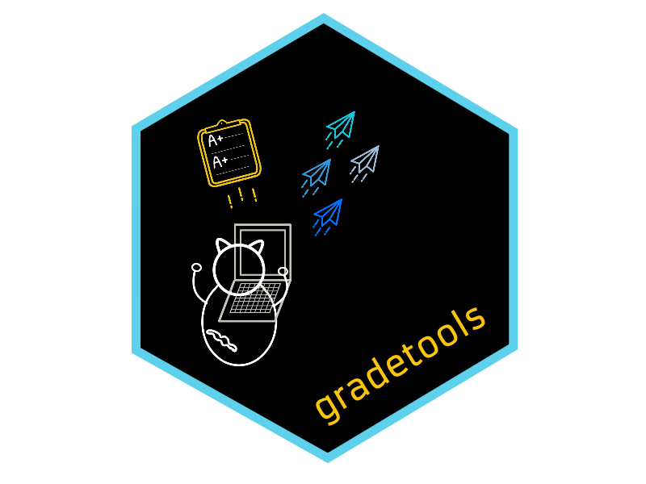

class: center, middle, inverse, title-slide .title[ #  ] .subtitle[ ## gradetools: a grading assistant in RStudio <br> <a href="https://bit.ly/gradetools-workshop">bit.ly/gradetools-workshop</a> ] .author[ ### Federica Zoe Ricci, Catalina Medina, and Mine Dogucu ] .date[ ### 2023-05-03 ] --- class: hide-count, middle, center .panelset[ .panel[.panel-name[Federica Zoe Ricci] <img src="figures/federica-ricci.jpeg" width="20%" style="display: block; margin: auto;" /> <svg aria-hidden="true" role="img" viewBox="0 0 640 512" style="height:1em;width:1.25em;vertical-align:-0.125em;margin-left:auto;margin-right:auto;font-size:inherit;fill:currentColor;overflow:visible;position:relative;"><path d="M579.8 267.7c56.5-56.5 56.5-148 0-204.5c-50-50-128.8-56.5-186.3-15.4l-1.6 1.1c-14.4 10.3-17.7 30.3-7.4 44.6s30.3 17.7 44.6 7.4l1.6-1.1c32.1-22.9 76-19.3 103.8 8.6c31.5 31.5 31.5 82.5 0 114L422.3 334.8c-31.5 31.5-82.5 31.5-114 0c-27.9-27.9-31.5-71.8-8.6-103.8l1.1-1.6c10.3-14.4 6.9-34.4-7.4-44.6s-34.4-6.9-44.6 7.4l-1.1 1.6C206.5 251.2 213 330 263 380c56.5 56.5 148 56.5 204.5 0L579.8 267.7zM60.2 244.3c-56.5 56.5-56.5 148 0 204.5c50 50 128.8 56.5 186.3 15.4l1.6-1.1c14.4-10.3 17.7-30.3 7.4-44.6s-30.3-17.7-44.6-7.4l-1.6 1.1c-32.1 22.9-76 19.3-103.8-8.6C74 372 74 321 105.5 289.5L217.7 177.2c31.5-31.5 82.5-31.5 114 0c27.9 27.9 31.5 71.8 8.6 103.9l-1.1 1.6c-10.3 14.4-6.9 34.4 7.4 44.6s34.4 6.9 44.6-7.4l1.1-1.6C433.5 260.8 427 182 377 132c-56.5-56.5-148-56.5-204.5 0L60.2 244.3z"/></svg> <a href = "https://federicazoe.github.io/">federicazoe.github.io</a> <svg aria-hidden="true" role="img" viewBox="0 0 496 512" style="height:1em;width:0.97em;vertical-align:-0.125em;margin-left:auto;margin-right:auto;font-size:inherit;fill:currentColor;overflow:visible;position:relative;"><path d="M165.9 397.4c0 2-2.3 3.6-5.2 3.6-3.3.3-5.6-1.3-5.6-3.6 0-2 2.3-3.6 5.2-3.6 3-.3 5.6 1.3 5.6 3.6zm-31.1-4.5c-.7 2 1.3 4.3 4.3 4.9 2.6 1 5.6 0 6.2-2s-1.3-4.3-4.3-5.2c-2.6-.7-5.5.3-6.2 2.3zm44.2-1.7c-2.9.7-4.9 2.6-4.6 4.9.3 2 2.9 3.3 5.9 2.6 2.9-.7 4.9-2.6 4.6-4.6-.3-1.9-3-3.2-5.9-2.9zM244.8 8C106.1 8 0 113.3 0 252c0 110.9 69.8 205.8 169.5 239.2 12.8 2.3 17.3-5.6 17.3-12.1 0-6.2-.3-40.4-.3-61.4 0 0-70 15-84.7-29.8 0 0-11.4-29.1-27.8-36.6 0 0-22.9-15.7 1.6-15.4 0 0 24.9 2 38.6 25.8 21.9 38.6 58.6 27.5 72.9 20.9 2.3-16 8.8-27.1 16-33.7-55.9-6.2-112.3-14.3-112.3-110.5 0-27.5 7.6-41.3 23.6-58.9-2.6-6.5-11.1-33.3 2.6-67.9 20.9-6.5 69 27 69 27 20-5.6 41.5-8.5 62.8-8.5s42.8 2.9 62.8 8.5c0 0 48.1-33.6 69-27 13.7 34.7 5.2 61.4 2.6 67.9 16 17.7 25.8 31.5 25.8 58.9 0 96.5-58.9 104.2-114.8 110.5 9.2 7.9 17 22.9 17 46.4 0 33.7-.3 75.4-.3 83.6 0 6.5 4.6 14.4 17.3 12.1C428.2 457.8 496 362.9 496 252 496 113.3 383.5 8 244.8 8zM97.2 352.9c-1.3 1-1 3.3.7 5.2 1.6 1.6 3.9 2.3 5.2 1 1.3-1 1-3.3-.7-5.2-1.6-1.6-3.9-2.3-5.2-1zm-10.8-8.1c-.7 1.3.3 2.9 2.3 3.9 1.6 1 3.6.7 4.3-.7.7-1.3-.3-2.9-2.3-3.9-2-.6-3.6-.3-4.3.7zm32.4 35.6c-1.6 1.3-1 4.3 1.3 6.2 2.3 2.3 5.2 2.6 6.5 1 1.3-1.3.7-4.3-1.3-6.2-2.2-2.3-5.2-2.6-6.5-1zm-11.4-14.7c-1.6 1-1.6 3.6 0 5.9 1.6 2.3 4.3 3.3 5.6 2.3 1.6-1.3 1.6-3.9 0-6.2-1.4-2.3-4-3.3-5.6-2z"/></svg><a href = "http://github.com/federicazoe">federicazoe</a> <svg aria-hidden="true" role="img" viewBox="0 0 512 512" style="height:1em;width:1em;vertical-align:-0.125em;margin-left:auto;margin-right:auto;font-size:inherit;fill:currentColor;overflow:visible;position:relative;"><path d="M0 128C0 92.65 28.65 64 64 64H448C483.3 64 512 92.65 512 128V384C512 419.3 483.3 448 448 448H64C28.65 448 0 419.3 0 384V128zM48 128V150.1L220.5 291.7C241.1 308.7 270.9 308.7 291.5 291.7L464 150.1V127.1C464 119.2 456.8 111.1 448 111.1H64C55.16 111.1 48 119.2 48 127.1L48 128zM48 212.2V384C48 392.8 55.16 400 64 400H448C456.8 400 464 392.8 464 384V212.2L322 328.8C283.6 360.3 228.4 360.3 189.1 328.8L48 212.2z"/></svg> <a href = "fzricci@uci.edu">fzricci@uci.edu</a> ] .panel[.panel-name[Catalina Mari Medina] <img src="figures/catalina-medina.jpg" width="20%" style="display: block; margin: auto;" /> <svg aria-hidden="true" role="img" viewBox="0 0 640 512" style="height:1em;width:1.25em;vertical-align:-0.125em;margin-left:auto;margin-right:auto;font-size:inherit;fill:currentColor;overflow:visible;position:relative;"><path d="M579.8 267.7c56.5-56.5 56.5-148 0-204.5c-50-50-128.8-56.5-186.3-15.4l-1.6 1.1c-14.4 10.3-17.7 30.3-7.4 44.6s30.3 17.7 44.6 7.4l1.6-1.1c32.1-22.9 76-19.3 103.8 8.6c31.5 31.5 31.5 82.5 0 114L422.3 334.8c-31.5 31.5-82.5 31.5-114 0c-27.9-27.9-31.5-71.8-8.6-103.8l1.1-1.6c10.3-14.4 6.9-34.4-7.4-44.6s-34.4-6.9-44.6 7.4l-1.1 1.6C206.5 251.2 213 330 263 380c56.5 56.5 148 56.5 204.5 0L579.8 267.7zM60.2 244.3c-56.5 56.5-56.5 148 0 204.5c50 50 128.8 56.5 186.3 15.4l1.6-1.1c14.4-10.3 17.7-30.3 7.4-44.6s-30.3-17.7-44.6-7.4l-1.6 1.1c-32.1 22.9-76 19.3-103.8-8.6C74 372 74 321 105.5 289.5L217.7 177.2c31.5-31.5 82.5-31.5 114 0c27.9 27.9 31.5 71.8 8.6 103.9l-1.1 1.6c-10.3 14.4-6.9 34.4 7.4 44.6s34.4 6.9 44.6-7.4l1.1-1.6C433.5 260.8 427 182 377 132c-56.5-56.5-148-56.5-204.5 0L60.2 244.3z"/></svg> <a href = "https://catalinamedina.github.io/">catalinamedina.github.io</a> <svg aria-hidden="true" role="img" viewBox="0 0 496 512" style="height:1em;width:0.97em;vertical-align:-0.125em;margin-left:auto;margin-right:auto;font-size:inherit;fill:currentColor;overflow:visible;position:relative;"><path d="M165.9 397.4c0 2-2.3 3.6-5.2 3.6-3.3.3-5.6-1.3-5.6-3.6 0-2 2.3-3.6 5.2-3.6 3-.3 5.6 1.3 5.6 3.6zm-31.1-4.5c-.7 2 1.3 4.3 4.3 4.9 2.6 1 5.6 0 6.2-2s-1.3-4.3-4.3-5.2c-2.6-.7-5.5.3-6.2 2.3zm44.2-1.7c-2.9.7-4.9 2.6-4.6 4.9.3 2 2.9 3.3 5.9 2.6 2.9-.7 4.9-2.6 4.6-4.6-.3-1.9-3-3.2-5.9-2.9zM244.8 8C106.1 8 0 113.3 0 252c0 110.9 69.8 205.8 169.5 239.2 12.8 2.3 17.3-5.6 17.3-12.1 0-6.2-.3-40.4-.3-61.4 0 0-70 15-84.7-29.8 0 0-11.4-29.1-27.8-36.6 0 0-22.9-15.7 1.6-15.4 0 0 24.9 2 38.6 25.8 21.9 38.6 58.6 27.5 72.9 20.9 2.3-16 8.8-27.1 16-33.7-55.9-6.2-112.3-14.3-112.3-110.5 0-27.5 7.6-41.3 23.6-58.9-2.6-6.5-11.1-33.3 2.6-67.9 20.9-6.5 69 27 69 27 20-5.6 41.5-8.5 62.8-8.5s42.8 2.9 62.8 8.5c0 0 48.1-33.6 69-27 13.7 34.7 5.2 61.4 2.6 67.9 16 17.7 25.8 31.5 25.8 58.9 0 96.5-58.9 104.2-114.8 110.5 9.2 7.9 17 22.9 17 46.4 0 33.7-.3 75.4-.3 83.6 0 6.5 4.6 14.4 17.3 12.1C428.2 457.8 496 362.9 496 252 496 113.3 383.5 8 244.8 8zM97.2 352.9c-1.3 1-1 3.3.7 5.2 1.6 1.6 3.9 2.3 5.2 1 1.3-1 1-3.3-.7-5.2-1.6-1.6-3.9-2.3-5.2-1zm-10.8-8.1c-.7 1.3.3 2.9 2.3 3.9 1.6 1 3.6.7 4.3-.7.7-1.3-.3-2.9-2.3-3.9-2-.6-3.6-.3-4.3.7zm32.4 35.6c-1.6 1.3-1 4.3 1.3 6.2 2.3 2.3 5.2 2.6 6.5 1 1.3-1.3.7-4.3-1.3-6.2-2.2-2.3-5.2-2.6-6.5-1zm-11.4-14.7c-1.6 1-1.6 3.6 0 5.9 1.6 2.3 4.3 3.3 5.6 2.3 1.6-1.3 1.6-3.9 0-6.2-1.4-2.3-4-3.3-5.6-2z"/></svg><a href = "http://github.com/CatalinaMedina">CatalinaMedina</a> <svg aria-hidden="true" role="img" viewBox="0 0 512 512" style="height:1em;width:1em;vertical-align:-0.125em;margin-left:auto;margin-right:auto;font-size:inherit;fill:currentColor;overflow:visible;position:relative;"><path d="M0 128C0 92.65 28.65 64 64 64H448C483.3 64 512 92.65 512 128V384C512 419.3 483.3 448 448 448H64C28.65 448 0 419.3 0 384V128zM48 128V150.1L220.5 291.7C241.1 308.7 270.9 308.7 291.5 291.7L464 150.1V127.1C464 119.2 456.8 111.1 448 111.1H64C55.16 111.1 48 119.2 48 127.1L48 128zM48 212.2V384C48 392.8 55.16 400 64 400H448C456.8 400 464 392.8 464 384V212.2L322 328.8C283.6 360.3 228.4 360.3 189.1 328.8L48 212.2z"/></svg> <a href = "catalmm1@uci.edu">catalmm1@uci.edu</a> ] .panel[.panel-name[Mine Dogucu] <img src="figures/mine-dogucu.jpeg" width="20%" style="display: block; margin: auto;" /> <svg aria-hidden="true" role="img" viewBox="0 0 640 512" style="height:1em;width:1.25em;vertical-align:-0.125em;margin-left:auto;margin-right:auto;font-size:inherit;fill:currentColor;overflow:visible;position:relative;"><path d="M579.8 267.7c56.5-56.5 56.5-148 0-204.5c-50-50-128.8-56.5-186.3-15.4l-1.6 1.1c-14.4 10.3-17.7 30.3-7.4 44.6s30.3 17.7 44.6 7.4l1.6-1.1c32.1-22.9 76-19.3 103.8 8.6c31.5 31.5 31.5 82.5 0 114L422.3 334.8c-31.5 31.5-82.5 31.5-114 0c-27.9-27.9-31.5-71.8-8.6-103.8l1.1-1.6c10.3-14.4 6.9-34.4-7.4-44.6s-34.4-6.9-44.6 7.4l-1.1 1.6C206.5 251.2 213 330 263 380c56.5 56.5 148 56.5 204.5 0L579.8 267.7zM60.2 244.3c-56.5 56.5-56.5 148 0 204.5c50 50 128.8 56.5 186.3 15.4l1.6-1.1c14.4-10.3 17.7-30.3 7.4-44.6s-30.3-17.7-44.6-7.4l-1.6 1.1c-32.1 22.9-76 19.3-103.8-8.6C74 372 74 321 105.5 289.5L217.7 177.2c31.5-31.5 82.5-31.5 114 0c27.9 27.9 31.5 71.8 8.6 103.9l-1.1 1.6c-10.3 14.4-6.9 34.4 7.4 44.6s34.4 6.9 44.6-7.4l1.1-1.6C433.5 260.8 427 182 377 132c-56.5-56.5-148-56.5-204.5 0L60.2 244.3z"/></svg> <a href = "http://minedogucu.com">minedogucu.com</a> <svg aria-hidden="true" role="img" viewBox="0 0 496 512" style="height:1em;width:0.97em;vertical-align:-0.125em;margin-left:auto;margin-right:auto;font-size:inherit;fill:currentColor;overflow:visible;position:relative;"><path d="M165.9 397.4c0 2-2.3 3.6-5.2 3.6-3.3.3-5.6-1.3-5.6-3.6 0-2 2.3-3.6 5.2-3.6 3-.3 5.6 1.3 5.6 3.6zm-31.1-4.5c-.7 2 1.3 4.3 4.3 4.9 2.6 1 5.6 0 6.2-2s-1.3-4.3-4.3-5.2c-2.6-.7-5.5.3-6.2 2.3zm44.2-1.7c-2.9.7-4.9 2.6-4.6 4.9.3 2 2.9 3.3 5.9 2.6 2.9-.7 4.9-2.6 4.6-4.6-.3-1.9-3-3.2-5.9-2.9zM244.8 8C106.1 8 0 113.3 0 252c0 110.9 69.8 205.8 169.5 239.2 12.8 2.3 17.3-5.6 17.3-12.1 0-6.2-.3-40.4-.3-61.4 0 0-70 15-84.7-29.8 0 0-11.4-29.1-27.8-36.6 0 0-22.9-15.7 1.6-15.4 0 0 24.9 2 38.6 25.8 21.9 38.6 58.6 27.5 72.9 20.9 2.3-16 8.8-27.1 16-33.7-55.9-6.2-112.3-14.3-112.3-110.5 0-27.5 7.6-41.3 23.6-58.9-2.6-6.5-11.1-33.3 2.6-67.9 20.9-6.5 69 27 69 27 20-5.6 41.5-8.5 62.8-8.5s42.8 2.9 62.8 8.5c0 0 48.1-33.6 69-27 13.7 34.7 5.2 61.4 2.6 67.9 16 17.7 25.8 31.5 25.8 58.9 0 96.5-58.9 104.2-114.8 110.5 9.2 7.9 17 22.9 17 46.4 0 33.7-.3 75.4-.3 83.6 0 6.5 4.6 14.4 17.3 12.1C428.2 457.8 496 362.9 496 252 496 113.3 383.5 8 244.8 8zM97.2 352.9c-1.3 1-1 3.3.7 5.2 1.6 1.6 3.9 2.3 5.2 1 1.3-1 1-3.3-.7-5.2-1.6-1.6-3.9-2.3-5.2-1zm-10.8-8.1c-.7 1.3.3 2.9 2.3 3.9 1.6 1 3.6.7 4.3-.7.7-1.3-.3-2.9-2.3-3.9-2-.6-3.6-.3-4.3.7zm32.4 35.6c-1.6 1.3-1 4.3 1.3 6.2 2.3 2.3 5.2 2.6 6.5 1 1.3-1.3.7-4.3-1.3-6.2-2.2-2.3-5.2-2.6-6.5-1zm-11.4-14.7c-1.6 1-1.6 3.6 0 5.9 1.6 2.3 4.3 3.3 5.6 2.3 1.6-1.3 1.6-3.9 0-6.2-1.4-2.3-4-3.3-5.6-2z"/></svg><a href = "http://github.com/mdogucu">mdogucu</a> <svg aria-hidden="true" role="img" viewBox="0 0 512 512" style="height:1em;width:1em;vertical-align:-0.125em;margin-left:auto;margin-right:auto;font-size:inherit;fill:currentColor;overflow:visible;position:relative;"><path d="M459.37 151.716c.325 4.548.325 9.097.325 13.645 0 138.72-105.583 298.558-298.558 298.558-59.452 0-114.68-17.219-161.137-47.106 8.447.974 16.568 1.299 25.34 1.299 49.055 0 94.213-16.568 130.274-44.832-46.132-.975-84.792-31.188-98.112-72.772 6.498.974 12.995 1.624 19.818 1.624 9.421 0 18.843-1.3 27.614-3.573-48.081-9.747-84.143-51.98-84.143-102.985v-1.299c13.969 7.797 30.214 12.67 47.431 13.319-28.264-18.843-46.781-51.005-46.781-87.391 0-19.492 5.197-37.36 14.294-52.954 51.655 63.675 129.3 105.258 216.365 109.807-1.624-7.797-2.599-15.918-2.599-24.04 0-57.828 46.782-104.934 104.934-104.934 30.213 0 57.502 12.67 76.67 33.137 23.715-4.548 46.456-13.32 66.599-25.34-7.798 24.366-24.366 44.833-46.132 57.827 21.117-2.273 41.584-8.122 60.426-16.243-14.292 20.791-32.161 39.308-52.628 54.253z"/></svg> <a href = "http://twitter.com/MineDogucu">MineDogucu</a> ] ] --- class: middle ## Workshop outline - What and why? - Example of basic grading with gradetools - Comprehensive demo - Resources (Q & A time) --- class: middle ## Terminology .emph[Grade] - Numeric score .emph[Feedback] - Qualitative (no score) --- class: middle ![:col_header <span style="font-size:23px; color:whitesmoke;">1. Preparation <br> <br> </span> <i class="fa-solid fa-file-arrow-down" aria-hidden="true" style="font-size:90px; color:whitesmoke;"></i>, <span style="font-size:23px; color:whitesmoke;">2. Grading and Feedback <br> <br> </span> <i class="fa-solid fa-pen-to-square" aria-hidden="true" style="font-size:90px; color:whitesmoke;"></i>, <span style="font-size:23px; color:whitesmoke;">3. Returning grades & feedback <br> <br> </span> <i class="fa-solid fa-file-arrow-up" aria-hidden="true" style="font-size:90px; color:whitesmoke;"></i> ] --- class: middle center <span style="font-size:23px; color:whitesmoke;">2. Grading and Feedback <br> <br> </span> <i class="fa-solid fa-pen-to-square" aria-hidden="true" style="font-size:90px; color:whitesmoke;"></i> -- We can think of automated grading and feedback tools as essentially long lines of if-else statements. --- class: middle ## Automated feedback example `library(learnr)` <img src="figures/learnr-example.png" width="85%" style="display: block; margin: auto;" /> [Example from learnr tutorial](https://rstudio.github.io/learnr/) --- class: middle center <span style="font-size:23px; color:whitesmoke;">2. Grading and Feedback <br> <br> </span> <i class="fa-solid fa-pen-to-square" aria-hidden="true" style="font-size:90px; color:whitesmoke;"></i> Automated grading and feedback tools are essentially long lines of if-else statements. -- gradetools is NOT an automated grading or feedback tool. --- class: middle center gradetools is an automated grading workflow tool. --- .pull-left[ ## Tasks - Downloading student files ] <img src="figures/github-logo.png" alt="GitHub logo" width="20%" style="display: block; margin: auto 0 auto auto;" /> <img src="figures/canvas-logo.jpeg" alt="Canvas logo" width="20%" style="display: block; margin: auto 0 auto auto;" /> --- .pull-left2[ ## Tasks - Downloading student files - Open each student's file(s), one by one ] .pull-right2[ <img src="figures/screenshot-assignment-folders.png" alt="A folder structure titled hw-1. There are multiple hw01 folders for different students." width="180%" style="display: block; margin: auto 0 auto auto;" /> ] --- .pull-left2[ ## Tasks - Downloading student files - Open each student's file(s), one by one - Finding the corresponding student on the grade sheet. ] .pull-right2[ <br> <br> <img src="figures/excel.png" alt="A screenshot of Microsoft Excel" width="100%" style="display: block; margin: auto 0 auto auto;" /> ] --- .pull-left2[ ## Tasks - Downloading student files - Open each student's file(s), one by one - Finding the corresponding student on the grade sheet. - Evaluating student's work. ] .pull-right2[ <br> <br> <img src="figures/rstudio-logo.png" alt="A screenshot of Microsoft Excel" width="100%" style="display: block; margin: auto 0 auto auto;" /> ] --- .pull-left2[ ## Tasks - Downloading student files - Open each student's file(s), one by one - Finding the corresponding student on the grade sheet. - Evaluating student's work. - Assigning a score for the work. ] .pull-right2[ <br> <br> <img src="figures/excel.png" alt="A screenshot of Microsoft Excel" width="100%" style="display: block; margin: auto 0 auto auto;" /> ] --- .pull-left2[ ## Tasks - Downloading student files - Open each student's file(s), one by one - Finding the corresponding student on the grade sheet. - Evaluating student's work. - Assigning a score for the work. - Providing feedback. ] .pull-right2[ <br> <br> <img src="figures/rstudio-logo.png" alt="A screenshot of Microsoft Excel" width="100%" style="display: block; margin: auto;" /> <img src="figures/github-logo.png" alt="A screenshot of Microsoft Excel" width="40%" style="display: block; margin: auto;" /> <img src="figures/canvas-logo.jpeg" alt="A screenshot of Microsoft Excel" width="40%" style="display: block; margin: auto;" /> ] --- class: middle .pull-left[ ## Administrative Tasks - Opening and closing files - Finding the corresponding student on the grade sheet - Entering and storing grades to the gradesheet ] .pull-right[ ## Pedagogical Decisions - Evaluating students' work - Providing feedback - Assigning a score ] --- class: middle The gradetools package - .emph[automates] the repetitive .emph[administrative tasks] in the grading workflow - minimizes switching between different interfaces - .emph[saves time for] more meaningful tasks that require .emph[pedagogical decisions]. --- class: middle ## Feedback Examples | Example | Question | Student | |---------|-----------|----------| | "Please adhere to the Tidyverse style guide" | All | All | | "When interpreting the slope coefficient make sure to use units of measurement." | Specific | All | | "Thank you for your note, Menglin. I am glad you had fun doing the assignment." | All | Specific | | "Recall our conversation about the p-value during office hour ..." | Specific | Specific | --- class: middle ## Rubric | || | |----------------|----------------------------------------------|--------------------------------------------------| | feedback | "Please adhere to the Tidyverse style guide" | What the student sees when they receive feedback | | prompt_message | code style | What the instructor sees while grading | | prompt_code | 1 | What the instructor enters while grading | --- class: middle ## Installing our package ```r devtools::install_github("federicazoe/gradetools") ``` --- class: middle ## Basics of grading: demo ```r assist_grading( rubric_path = "quiz-09-lin-reg-rubric.csv", roster_path = "class-roster.csv", grading_progress_log_path = "quiz-09-lin-reg-grading-progress-log.csv", final_grade_sheet_path = "quiz-09-lin-reg-final-grade-sheet.csv", example_student_identifier = "federicazoe", example_assignment_path = "quizzes/quiz-09a-lin-reg-federicazoe.Rmd", example_feedback_path = "quizzes/feedback-quiz-09a-lin-reg-federicazoe.html" ) ``` --- class: middle, center <div class="row"> <div class="column_left"> <img src="figures/final-diagram-left-ghost.png" alt="" style="width:100%"> </div> <div class="column_center"> <img src="figures/final-diagram-center-1.png" alt="A rounded rectangle of yellow color saying 'automatically open/close assignment files'. Below this rounded rectangle is blank space as if more rectangles are still not shown." style="width:100%"> </div> <div class="column_right"> <img src="figures/final-diagram-right-ghost.png" alt="" style="width:100%"> </div> </div> --- class: middle, center <div class="row"> <div class="column_left"> <img src="figures/final-diagram-left-ghost.png" alt="" style="width:100%"> </div> <div class="column_center"> <img src="figures/final-diagram-center-2.png" alt="Two rounded rectangles of yellow color saying 'automatically open/close assignment files' and 'assign scores and feedback to each assignment given the applied rubric items'. Below this rounded rectangle is blank space as if more rectangles are still not shown." style="width:100%"> </div> <div class="column_right"> <img src="figures/final-diagram-right-ghost.png" alt="" style="width:100%"> </div> </div> --- class: middle, center <div class="row"> <div class="column_left"> <img src="figures/final-diagram-left-ghost.png" alt="" style="width:100%"> </div> <div class="column_center"> <img src="figures/final-diagram-center-3.png" alt="Three rounded rectangles of yellow color saying 'automatically open/close assignment files', 'assign scores and feedback to each assignment given the applied rubric items', and 'store grading progress'. Below this rounded rectangle is blank space as if more rectangles are still not shown." style="width:100%"> </div> <div class="column_right"> <img src="figures/final-diagram-right-ghost.png" alt="" style="width:100%"> </div> </div> --- class: middle, center <div class="row"> <div class="column_left"> <img src="figures/final-diagram-left-3.png" alt="A box labeled input with three bullet points: roster, rubric, and assignments." style="width:100%"> </div> <div class="column_center"> <img src="figures/final-diagram-center-3.png" alt="Three rounded rectangles of yellow color saying 'automatically open/close assignment files', 'assign scores and feedback to each assignment given the applied rubric items', and 'store grading progress'. Below this rounded rectangle is blank space as if more rectangles are still not shown." style="width:100%"> </div> <div class="column_right"> <img src="figures/final-diagram-right-3.png" alt="A box labeled output with three bullet points: grade sheet, feedback files, and GitHub issues." style="width:100%"> </div> </div> --- class: middle, center <div class="row"> <div class="column_left"> <img src="figures/final-diagram-left-4.png" alt="A box labeled preparation with three boxes contained within: 'obtain the roster' (shaded gray), 'create the rubric' (shaded yellow), 'retrieve the assignment' (shaded gray). Another box labeled input with three bullet points: roster, rubric, and assignments" style="width:100%"> </div> <div class="column_center"> <img src="figures/final-diagram-center-3.png" alt="Three rounded rectangles of yellow color saying 'automatically open/close assignment files', 'assign scores and feedback to each assignment given the applied rubric items', and 'store grading progress'. Below this rounded rectangle is blank space as if more rectangles are still not shown." style="width:100%"> </div> <div class="column_right"> <img src="figures/final-diagram-right-3.png" alt="A box labeled output with three bullet points: grade sheet, feedback files, and GitHub issues." style="width:100%"> </div> </div> --- class: middle ## Formatting the roster - Must have student_identifier column - Can be anything unique to the student, for example: - Name - Student id - GitHub username --- class: middle ## Assignment/feedback file paths - The student identifier must be present and the only unique part - Provide one student identifier, assignment path(s), and feedback path <img src="figures/filepaths.png" alt="Code font: in one box 'example_student_identifier = CatalinaMedina' and in another 'example_assignment_path = c(final-project-CatalinaMedina/proposal.Rmd, final-project-CatalinaMedina/README.md)'" style="width:90%;"> --- class: middle, center ## Example assignment directories <div class="row"> <div class="column_half_left"> <img src="figures/filepath-yes.png" alt="An example of a directory structure that works with gradetools. A directory with two sub-directories labeled 'final-project-CatalinaMedina' and 'final-project-federicazoe', each containing two files 'proposal.Rmd' and 'README.md'." style="width:80%"> </div> <div class="column_half_right"> <img src="figures/filepath-no.png" alt="An example of a directory structure that does not work with gradetools. A directory with two sub-directories labeled 'final-project-CatalinaMedina' and 'final-project-federicazoe'. The first contains a file called 'README.md' and a folder called 'proposal' which contains a file called 'proposal.Rmd'. The second directory contains two files 'proposal.Rmd' and 'README.md'" style="width:80%"> </div> </div> --- class: middle, center ## Example assignment directories <div class="row"> <div class="column_half_left"> <img src="figures/filepath-yes.png" alt="An example of a directory structure that works with gradetools. A directory with two sub-directories labeled 'final-project-CatalinaMedina' and 'final-project-federicazoe', each containing two files 'proposal.Rmd' and 'README.md'." style="width:80%"> </div> <div class="column_half_right"> <img src="figures/filepath-no2.png" alt="An example of a directory structure that does not work with gradetools. A directory with two sub-directories labeled 'final-project-CatalinaMedina' and 'final-project-federicazoe'. The first contains a file called 'README.md' and a folder called 'proposal' which contains a file called 'proposal.Rmd'. The second directory contains two files 'proposal.Rmd' and 'README.md'" style="width:80%"> </div> </div> --- class: middle, center ## Three example arguments ```r example_student_identifier = "federicazoe" example_assignment_path = "quizzes/quiz-09a-lin-reg-federicazoe.Rmd" example_feedback_path = "quizzes/feedback-federicazoe.html" ``` --- class: hide-count, middle .pull-left[ ### Feedback extensions: - Rmd - md (for GitHub documents) - docx (for Word documents) - html - pdf ] -- .pull-right[ ### Assignment extensions: - Anything that opens in Rstudio using `navigateToFile()` ] --- class: middle, center <img src="figures/v1-rubric-filled.png" alt="A picture of a rubric csv file opened in Excel. The rubric has the headers: name, total_points, prompt_code, prompt_message, feedback, and points_to_remove. Each row of the rubric contains the information for a single rubric item. The file for this rubric can be found in gradetool's first vignette." style="width:100%;"> --- class: hide-count, middle .pull-left[ ### Rubric column headers: - name - total_points - prompt_code (entered by user) - prompt_message (displayed to user) - feedback (displayed to student) - points_to_remove or points_to_add ] -- .pull-right[ ### Rubric item types: - question/component - all_questions - general_feedback ] --- class: middle ## Review of `assist_grading()` arguments ```r assist_grading( rubric_path = "quiz-09-lin-reg-rubric.csv", roster_path = "class-roster.csv", grading_progress_log_path = "quiz-09-lin-reg-grading-progress-log.csv", final_grade_sheet_path = "quiz-09-lin-reg-final-grade-sheet.csv", example_student_identifier = "federicazoe", example_assignment_path = "quizzes/quiz-09a-lin-reg-federicazoe.Rmd", example_feedback_path = "quizzes/feedback-quiz-09a-lin-reg-federicazoe.html" ) ``` --- class: middle, center <div class="row"> <div class="column_left"> <img src="figures/final-diagram-left-4.png" alt="" style="width:100%"> </div> <div class="column_center"> <img src="figures/final-diagram-center-3.png" alt="" style="width:100%"> </div> <div class="column_right"> <img src="figures/final-diagram-right-3.png" alt="" style="width:100%"> </div> </div> --- class: middle, center <div class="row"> <div class="column_left"> <img src="figures/final-diagram-left-4.png" alt="" style="width:100%"> </div> <div class="column_center"> <img src="figures/final-diagram-center-blue-1.png" alt=". A rounded rectangle of light blue color saying 'add new rubric items while grading'. Below this rounded rectangle, some blank space as if more rectangles are still not shown. At the bottom, a legend that says 'gradetools' and 'yellow' for core, 'additional' for light blue." style="width:100%"> </div> <div class="column_right"> <img src="figures/final-diagram-right-3.png" alt="" style="width:100%"> </div> </div> --- class: middle, center <div class="row"> <div class="column_left"> <img src="figures/final-diagram-left-4.png" alt="" style="width:100%"> </div> <div class="column_center"> <img src="figures/final-diagram-center-blue-2.png" alt="Below, a rounded rectangle of light blue color saying 'add new rubric items while grading'. Below, another rounded rectangle of light blue color saying 'give personalized feedback'. Below this last rounded rectangle, some blank space as if more rectangles are still not shown. At the bottom, a legend that says 'gradetools' and 'yellow' for core, 'additional' for light blue." style="width:100%"> </div> <div class="column_right"> <img src="figures/final-diagram-right-3.png" alt="" style="width:100%"> </div> </div> --- class: middle, center <div class="row"> <div class="column_left"> <img src="figures/final-diagram-left-4.png" alt="" style="width:100%"> </div> <div class="column_center"> <img src="figures/final-diagram-center-blue-3.png" alt="Below, a rounded rectangle of light blue color saying 'add new rubric items while grading'. Below, another rounded rectangle of light blue color saying 'give personalized feedback'. Below, another rounded rectangle of light blue color saying 'regrade specified questions and specified students'. Below this last rounded rectangle, some blank space as if more rectangles are still not shown. At the bottom, a legend that says 'gradetools' and 'yellow' for core, 'additional' for light blue." style="width:100%"> </div> <div class="column_right"> <img src="figures/final-diagram-right-3.png" alt="" style="width:100%"> </div> </div> --- class: middle, center <div class="row"> <div class="column_left"> <img src="figures/final-diagram-left-4.png" alt="" style="width:100%"> </div> <div class="column_center"> <img src="figures/final-diagram-center.png" alt="Below, a rounded rectangle of light blue color saying 'add new rubric items while grading'. Below, another rounded rectangle of light blue color saying 'give personalized feedback'. Below, another rounded rectangle of light blue color saying 'regrade specified questions and specified students'. Below, another rounded rectangle of light blue color saying 'take note of GitHub issues to be created in students' repos. At the bottom, a legend that says 'gradetools' and 'yellow' for core, 'additional' for light blue." style="width:100%"> </div> <div class="column_right"> <img src="figures/final-diagram-right-3.png" alt="" style="width:100%"> </div> </div> --- class: middle, center <div class="row"> <div class="column_left"> <img src="figures/final-diagram-left.png" alt="Snow" style="width:100%"> </div> <div class="column_center"> <img src="figures/final-diagram-center.png" alt="Below, a rounded rectangle of light blue color saying 'add new rubric items while grading'. Below, another rounded rectangle of light blue color saying 'give personalized feedback'. Below, another rounded rectangle of light blue color saying 'regrade specified questions and specified students'. Below, another rounded rectangle of light blue color saying 'take note of GitHub issues to be created in students' repos. At the bottom, a legend that says 'gradetools' and 'yellow' for core, 'additional' for light blue." style="width:100%"> </div> <div class="column_right"> <img src="figures/final-diagram-right.png" alt="The square where the outputs are listed is linked to text box that reads '3. Finalization', which is the header of a rounded transparent rectangle around two gray-filled rounded rectangles that read 'upload the grade sheet' and 'distribute the feedback'. Nested within this last gray rectangle there are two smaller light blue colored rectangles that read 'push feedback files to GitHub' and 'create issues in students'repos on GitHub'" style="width:100%"> </div> </div> --- class: middle ## Assist grading functions | | Specify student and question to grade | GitHub | Team | |---------------------------|-----------------------------------------------------|-----------------------------------------------------|-----------------------------------------------------| | .code[assist_grading()] | <svg aria-hidden="true" role="img" viewBox="0 0 320 512" style="height:1em;width:0.62em;vertical-align:-0.125em;margin-left:auto;margin-right:auto;font-size:inherit;fill:red;overflow:visible;position:relative;"><path d="M310.6 150.6c12.5-12.5 12.5-32.8 0-45.3s-32.8-12.5-45.3 0L160 210.7 54.6 105.4c-12.5-12.5-32.8-12.5-45.3 0s-12.5 32.8 0 45.3L114.7 256 9.4 361.4c-12.5 12.5-12.5 32.8 0 45.3s32.8 12.5 45.3 0L160 301.3 265.4 406.6c12.5 12.5 32.8 12.5 45.3 0s12.5-32.8 0-45.3L205.3 256 310.6 150.6z"/></svg> | <svg aria-hidden="true" role="img" viewBox="0 0 320 512" style="height:1em;width:0.62em;vertical-align:-0.125em;margin-left:auto;margin-right:auto;font-size:inherit;fill:red;overflow:visible;position:relative;"><path d="M310.6 150.6c12.5-12.5 12.5-32.8 0-45.3s-32.8-12.5-45.3 0L160 210.7 54.6 105.4c-12.5-12.5-32.8-12.5-45.3 0s-12.5 32.8 0 45.3L114.7 256 9.4 361.4c-12.5 12.5-12.5 32.8 0 45.3s32.8 12.5 45.3 0L160 301.3 265.4 406.6c12.5 12.5 32.8 12.5 45.3 0s12.5-32.8 0-45.3L205.3 256 310.6 150.6z"/></svg> | <svg aria-hidden="true" role="img" viewBox="0 0 320 512" style="height:1em;width:0.62em;vertical-align:-0.125em;margin-left:auto;margin-right:auto;font-size:inherit;fill:red;overflow:visible;position:relative;"><path d="M310.6 150.6c12.5-12.5 12.5-32.8 0-45.3s-32.8-12.5-45.3 0L160 210.7 54.6 105.4c-12.5-12.5-32.8-12.5-45.3 0s-12.5 32.8 0 45.3L114.7 256 9.4 361.4c-12.5 12.5-12.5 32.8 0 45.3s32.8 12.5 45.3 0L160 301.3 265.4 406.6c12.5 12.5 32.8 12.5 45.3 0s12.5-32.8 0-45.3L205.3 256 310.6 150.6z"/></svg> | | .code[assist_advanced_grading()] | <svg aria-hidden="true" role="img" viewBox="0 0 512 512" style="height:1em;width:1em;vertical-align:-0.125em;margin-left:auto;margin-right:auto;font-size:inherit;fill:green;overflow:visible;position:relative;"><path d="M470.6 105.4c12.5 12.5 12.5 32.8 0 45.3l-256 256c-12.5 12.5-32.8 12.5-45.3 0l-128-128c-12.5-12.5-12.5-32.8 0-45.3s32.8-12.5 45.3 0L192 338.7 425.4 105.4c12.5-12.5 32.8-12.5 45.3 0z"/></svg> | <svg aria-hidden="true" role="img" viewBox="0 0 512 512" style="height:1em;width:1em;vertical-align:-0.125em;margin-left:auto;margin-right:auto;font-size:inherit;fill:green;overflow:visible;position:relative;"><path d="M470.6 105.4c12.5 12.5 12.5 32.8 0 45.3l-256 256c-12.5 12.5-32.8 12.5-45.3 0l-128-128c-12.5-12.5-12.5-32.8 0-45.3s32.8-12.5 45.3 0L192 338.7 425.4 105.4c12.5-12.5 32.8-12.5 45.3 0z"/></svg> | <svg aria-hidden="true" role="img" viewBox="0 0 320 512" style="height:1em;width:0.62em;vertical-align:-0.125em;margin-left:auto;margin-right:auto;font-size:inherit;fill:red;overflow:visible;position:relative;"><path d="M310.6 150.6c12.5-12.5 12.5-32.8 0-45.3s-32.8-12.5-45.3 0L160 210.7 54.6 105.4c-12.5-12.5-32.8-12.5-45.3 0s-12.5 32.8 0 45.3L114.7 256 9.4 361.4c-12.5 12.5-12.5 32.8 0 45.3s32.8 12.5 45.3 0L160 301.3 265.4 406.6c12.5 12.5 32.8 12.5 45.3 0s12.5-32.8 0-45.3L205.3 256 310.6 150.6z"/></svg> | | .code[assist_team_grading()] | <svg aria-hidden="true" role="img" viewBox="0 0 512 512" style="height:1em;width:1em;vertical-align:-0.125em;margin-left:auto;margin-right:auto;font-size:inherit;fill:green;overflow:visible;position:relative;"><path d="M470.6 105.4c12.5 12.5 12.5 32.8 0 45.3l-256 256c-12.5 12.5-32.8 12.5-45.3 0l-128-128c-12.5-12.5-12.5-32.8 0-45.3s32.8-12.5 45.3 0L192 338.7 425.4 105.4c12.5-12.5 32.8-12.5 45.3 0z"/></svg> | <svg aria-hidden="true" role="img" viewBox="0 0 512 512" style="height:1em;width:1em;vertical-align:-0.125em;margin-left:auto;margin-right:auto;font-size:inherit;fill:green;overflow:visible;position:relative;"><path d="M470.6 105.4c12.5 12.5 12.5 32.8 0 45.3l-256 256c-12.5 12.5-32.8 12.5-45.3 0l-128-128c-12.5-12.5-12.5-32.8 0-45.3s32.8-12.5 45.3 0L192 338.7 425.4 105.4c12.5-12.5 32.8-12.5 45.3 0z"/></svg> | <svg aria-hidden="true" role="img" viewBox="0 0 512 512" style="height:1em;width:1em;vertical-align:-0.125em;margin-left:auto;margin-right:auto;font-size:inherit;fill:green;overflow:visible;position:relative;"><path d="M470.6 105.4c12.5 12.5 12.5 32.8 0 45.3l-256 256c-12.5 12.5-32.8 12.5-45.3 0l-128-128c-12.5-12.5-12.5-32.8 0-45.3s32.8-12.5 45.3 0L192 338.7 425.4 105.4c12.5-12.5 32.8-12.5 45.3 0z"/></svg> | --- class: middle ## Comprehensive demo... -- ```r assist_team_grading( rubric_path = "rubric.csv", roster_path = "roster.csv", grading_progress_log_path = "grading_progress_log.csv", final_grade_sheet_path = "final-grade-sheet.csv", example_assignment_path = c( "final-project-team-repos/final-project-team-gamma/README.md", "final-project-team-repos/final-project-team-gamma/proposal/proposal.md", "final-project-team-repos/final-project-team-gamma/presentation/presentation.Rmd" ) , example_feedback_path = "final-project-team-repos/final-project-team-gamma/feedback.md", example_team_identifier = "gamma", github_issues = TRUE ) ``` --- ## Push feedback and issues ```r push_to_github( grading_progress_log_path = "grading_progress_log.csv", class_github_name = "gradetools-test-course", example_identifier = "gamma", example_github_repo = "final-project-team-gamma", push_feedback = TRUE, create_issues = TRUE, team_grading = TRUE ) ``` --- ## Re-grade ```r assist_regrading( rubric_path = "rubric.csv", grading_progress_log_path = "grading_progress_log.csv", final_grade_sheet_path = "final-grade-sheet.csv", questions_to_regrade = c("Proposal"), students_to_regrade = NULL, teams_to_regrade = c("gamma"), github_issues = TRUE ) ``` --- class: middle, center <div class="row"> <div class="column_left"> <img src="figures/final-diagram-left.png" alt="Snow" style="width:100%"> </div> <div class="column_center"> <img src="figures/final-diagram-center.png" alt="Forest" style="width:100%"> </div> <div class="column_right"> <img src="figures/final-diagram-right.png" alt="Mountains" style="width:100%"> </div> </div> --- class: middle center ## Acknowledgements <img src="figures/nsf-logo.png" alt="NSF logo" width="10%" style="display: block; margin: auto;" /> NSF HDR DSC award \#2123366 <img src="figures/hpi-logo.jpeg" alt="Hasso Plattner Institute in Machine Learning and Data Science logo" width="20%" style="display: block; margin: auto;" /> HPI --- class: middle ## RESOURCES https://github.com/federicazoe/gradetools https://federicazoe.github.io/gradetools/articles/ - [How to grade with gradetools](https://federicazoe.github.io/gradetools/articles/a-grading-with-gradetools.html) - [How to regrade assignments with gradetools](https://federicazoe.github.io/gradetools/articles/b-regrading-with-gradetools.html) - [Extended gradetools capability: Team Grading](https://federicazoe.github.io/gradetools/articles/c-extended-capability-teams.html) - [Extended gradetools capability: Assignments on GitHub](https://federicazoe.github.io/gradetools/articles/d-extended-capability-github.html) - [Comprehensive example of grading with gradetools](https://federicazoe.github.io/gradetools/articles/e-comprehensive-example.html) <!-- mention CRAN--> --- class: middle Thank you <hr> Questions? <hr> <svg aria-hidden="true" role="img" viewBox="0 0 640 512" style="height:1em;width:1.25em;vertical-align:-0.125em;margin-left:auto;margin-right:auto;font-size:inherit;fill:currentColor;overflow:visible;position:relative;"><path d="M579.8 267.7c56.5-56.5 56.5-148 0-204.5c-50-50-128.8-56.5-186.3-15.4l-1.6 1.1c-14.4 10.3-17.7 30.3-7.4 44.6s30.3 17.7 44.6 7.4l1.6-1.1c32.1-22.9 76-19.3 103.8 8.6c31.5 31.5 31.5 82.5 0 114L422.3 334.8c-31.5 31.5-82.5 31.5-114 0c-27.9-27.9-31.5-71.8-8.6-103.8l1.1-1.6c10.3-14.4 6.9-34.4-7.4-44.6s-34.4-6.9-44.6 7.4l-1.1 1.6C206.5 251.2 213 330 263 380c56.5 56.5 148 56.5 204.5 0L579.8 267.7zM60.2 244.3c-56.5 56.5-56.5 148 0 204.5c50 50 128.8 56.5 186.3 15.4l1.6-1.1c14.4-10.3 17.7-30.3 7.4-44.6s-30.3-17.7-44.6-7.4l-1.6 1.1c-32.1 22.9-76 19.3-103.8-8.6C74 372 74 321 105.5 289.5L217.7 177.2c31.5-31.5 82.5-31.5 114 0c27.9 27.9 31.5 71.8 8.6 103.9l-1.1 1.6c-10.3 14.4-6.9 34.4 7.4 44.6s34.4 6.9 44.6-7.4l1.1-1.6C433.5 260.8 427 182 377 132c-56.5-56.5-148-56.5-204.5 0L60.2 244.3z"/></svg> <a href = "https://bit.ly/gradetools-workshop">bit.ly/gradetools-workshop</a>